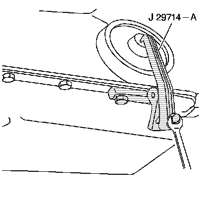
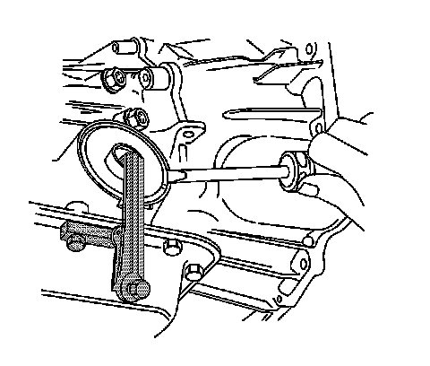
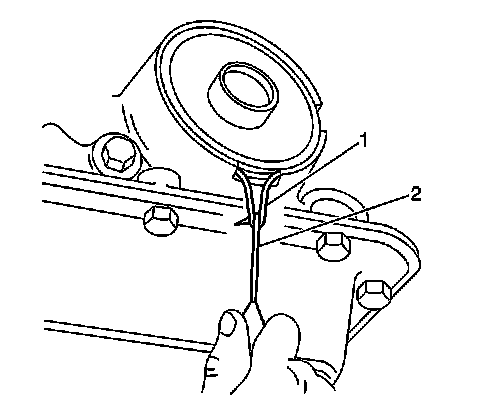
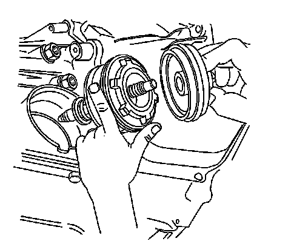

4L60-E/4L65-E/4L70-E - Automatic Transmission
2-4 Servo
Tools Required
J 29714-A Servo Cover Depressor
Removal Procedure

1. Remove the catalytic converter pipe.
2. Remove the heat shield bolts.
3. Remove the heat shield.
4. Support the transmission.
5. Remove the transmission crossmember.
6. Lower the transmission with a suitable jack.

7. Remove the oil pan bolt below the servo.
8. Install the J 29714-A.
9. Tighten the bolt on J 29714-A in order to compress the servo cover.

10. Remove the servo cover ring.
11. Remove the J 29714-A.

12. Remove the servo cover and O-ring seal. If the cover is hung up on the seal, use a pick (2) in order to pull and stretch the seal (1) out of the groove. Cut and remove the O-ring seal before removing the cover.

13. Remove the 2-4 servo.
14. Inspect the 4th apply piston, 2-4 servo converter, 2nd apply piston, and the servo piston inner housing for the following defects:
^ Cracks
^ Scoring
^ Burrs and nicks
Installation Procedure
1. Install NEW seals onto the servo pistons and the servo cover.
2. Install the 2-4 servo.
3. Install the J 29714-A.
4. Tighten the bolt on J 29714-A in order to compress the servo cover.
5. Install the servo cover ring.
6. Remove the J 29714-A.
Notice: Refer to Fastener Notice.
7. Install the oil pan bolt.
Tighten the bolt to 11 N.m (97 lb in).
8. Raise the transmission.
9. Install the transmission crossmember.
10. Remove the transmission jack.
11. Install the heat shield and bolts.
Tighten the bolts to 17 N.m (13 lb ft).
12. Install the catalytic converter pipe.
13. Fill the transmission to the proper level with DEXRON(R) VI transmission fluid. Refer to Transmission Fluid Checking.
Important: It is recommended that transmission adaptive pressure (TAP) information be reset.
Resetting the TAP values using a scan tool will erase all learned values in all cells. As a result, the engine control module (ECM), powertrain control module (PCM) or TCM will need to relearn TAP values. Transmission performance may be affected as new TAP values are learned.
14. Reset the TAP values. Refer to Transmission Adaptive Functions (TCM).